第六章：波动率与相关性（Volatility and Correlation）
What traders and historians share is an ingrained distrust of the notion of correlation. —— An option veteran
导读：本章要解决的问题
前五章处理的是工具、市场、流动性和套利。第六章回到期权交易最核心的两个输入：波动率（volatility）和相关性（correlation）。对一个金融工程读者，这两个量的定义和估计公式早已烂熟，本章的价值不在公式本身，而在 Taleb 对这些公式适用边界的怀疑。题记一句话定了调子：交易员和历史学家共享一种对相关性概念根深蒂固的不信任。
本章要回答的核心问题是：当我们说"波动率"和"相关性"时，到底在说什么，这些量在哪里变得含糊、在哪里会背叛你，以及交易员的脑子凭什么常常比 GARCH 这类计量模型预测得更准。 Taleb 的几条核心立场可以提前点明：波动率与时间平方根对随机游走的离散度有相同的作用；几何还是算术布朗运动是个经验问题而非教条问题（"也许 Bachelier 是对的"）；波动率不是常数，相关性比波动率更不稳定，市场已经适应了波动率会变这个事实，却还没适应相关性会变；而交易员脑中的隐含波动率，包含了过去价格里没有的信息，所以长期跑赢 GARCH。
把全章压缩成六条主线：
- 波动率有 actual（历史实际）与 implied（隐含）两种；相关性同样有 actual 与 implied，且每个到期对应一个隐含相关性。
- 几何 vs 算术布朗运动是经验问题：Eurodollar 和 Euroyen 的低利率事故说明，真实市场常常短期算术、长期几何。
- 历史波动率与相关性的计算可以去均值（noncentered），因为对动态对冲者，影响 P/L 的是平方移动本身而非对均值的偏离。
- 滤波（filtering / 指数衰减）给近期事件更高权重，是 Kalman 滤波的简化版，但交易员不该在盘中扮演计量经济学家。
- 波动率不恒定，相关性更不恒定，一系列图表反复砸实这一点。
- Parkinson 数（用高低价）和方差比方法（variance ratio）揭示均值回复与趋势，并直接指导障碍期权定价和 delta 调整频率；GARCH 系列模型是交易员直觉的弱模仿。
下面沿原文小节顺序展开，并在每个节点补全理论映射。
一、波动率与相关性的定义（Definitions）
波动率最好定义为某特定资产收益的变异量。它有两种：
- 实际波动率（actual volatility）：市场实际经历的移动，常叫历史（historical），有时叫 historical actual。
- 隐含波动率（implied volatility）：从某到期的期权价格反推出的波动率参数。操作者用 BSM 公式（及其衍生）作基准。习惯上把期权价格等同于其 BSM 解，即便相信 BSM 不合适、有缺陷，也这么做，而非去解一个更高级的定价公式。
相关性指两个随机变量之间用最小二乘度量的关联，它识别一个人能以多大确定性预测一个随机变量随另一个变量变化而产生的移动。所涉随机变量是资产的对数收益，即 。同样分两种：
- 实际相关性（actual correlation）：两市场移动之间的实际关联量。
- 隐含相关性（implied correlation）：从成分的期权价格反推的相关性参数。有多少个到期就有多少个隐含相关性。（模块 D 用三角法解释如何计算隐含相关性。）
Option Wizard：相关性与波动率的常见错误
交易员常犯一个简单错误：以为 A、B 两资产 100% 相关意味着 B 上涨 1% 时 A 应当同向移动 1%。这不对。它们可以 100% 相关，而 B 每动 1% 时 A 动 2%，如果 A 的波动率是 B 的两倍。相关性真正的含义，是资产移动之比除以它们各自波动率后的期望。
大多数随机游走模型背后的假设是对数正态（lognormality），它是"资产价格理论上不能为负"这个约束的必要解。Taleb 给出本章第一条警告：最危险的假设是相关性恒定。交易员当心：市场已经适应了波动率不是常数，还没适应相关性是波动的。
理论映射：相关性是协方差的归一化，与 beta 的区别
这个常见错误的根源，是把相关性 和回归斜率 混为一谈。相关性是归一化的协方差
它度量的是线性关联的紧密度，与两个资产各自的波动率尺度无关。而"B 动 1%、A 动多少"问的是回归斜率
它显式地带着波动率比 。Taleb 说"相关性是移动之比除以各自波动率的期望"，精确对应 。把 误读成"等幅移动"，等于隐含假设了 。这个区分在多资产期权里至关重要：cross gamma 和篮子波动率（第一、二章）依赖的是 ，但用流动工具对冲时的对冲比率依赖的是 ，两者差一个波动率比，搞混就会对冲错量。
二、时间的平方根与一个标准差（One Standard Deviation as a Function of Time）
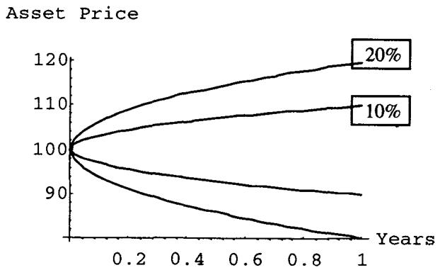
图 6.1 给出累积一个标准差随时间的分布。假设年化波动率 15.7%，市场预期每天动 1%，5 天动 2.23%（），20 天动 4.47%（），248 个交易日（一个商业年）动 15.7%（）。
这条 标度是全书最该刻进直觉的关系。Taleb 在后面"橡皮时间"那段把它点成一句话：波动率和时间的平方根对随机游走的离散度有相同的作用。 也就是说， 和 在分布的扩散里以乘积 的形式出现，谁大谁小可以互相换算。15.7% 这个数也不是随意的，它使日波动恰好约等于 1%（），是 Taleb 全书的标准化基准资产。
几何 vs 算术布朗运动
理论家们长期争论市场遵循几何还是算术布朗运动（见表 6.1、图 6.2、6.3）。Taleb 的区分非常实务：
- 几何布朗运动（geometric）：市场维持恒定的期望百分比移动，比如 1%。这解释了为什么用美元计的波动率在更高价位需要更高（价格 100 时 1% 是 1 美元，价格 120 时 1% 是 1.2 美元），也解释了为什么市场走弱时波动率会下降，这种阻尼防止市场到达负值。市场从 100 跌到 1，15.7% 的波动率代表 0.01 个 tick；到 0.10 时是 0.001，依此类推。
- 算术布朗运动（arithmetic）：市场维持恒定的期望美元移动，无论价位如何。学院派反对它，因为它会导致可能的负资产价格。但交易员认真对待它，因为他们相信对中等幅度的增量这个假设成立。而且货币市场工具历史上意外地多次与负价格擦肩。
- 真实金融市场常见的混合过程（短期算术、长期几何）后面再谈。
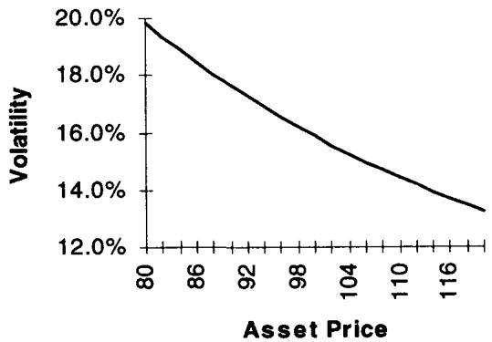
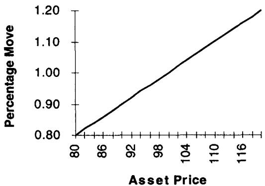
表 6.1 把这件事数值化：在恒定美元移动假设下，价位 80 对应 19.84% 的百分比波动率，价位 120 对应 13.23%；而在恒定百分比移动假设下，每个价位对应固定的美元移动（80 对应 0.80，120 对应 1.20）。两张图（6.2、6.3）分别画出两种假设下波动率随价位的形状。
Option Wizard：也许 Bachelier 是对的
Taleb 用两个真实事故说明几何/算术是经验问题，而非教条。
许多 cap/floor 做市商在 1991–1993 年 Eurodollar 大涨（收益率下跌）中受伤。利率在 9% 时，历史波动率平均约每天 9 个基点，很可观。做市商卖虚值 call，相信百分比波动率在大涨中不变，即 Eurodollar 到 4.5% 时"tick 波动率"或"美元波动率"会接近 4.5 个基点。他们错了：tick 波动率几乎保持恒定，他们的虚值 call 头寸让他们在极低水平上 short 了波动率。Eurodeposit 的大涨导致按期权理论（对数正态收益）定义的隐含和历史波动率上升，而平值跨式按 tick 计的价格全程几乎不变。这让一位著名的市场思想家对作者吐露："也许，那个叫 Bachelier 的人终究是对的。" 他指的是法国数学家 Louis Bachelier，1900 年（比 Black-Scholes 早 73 年）的博士论文用算术布朗运动给期权定价，长期被历史亏待。
Euroyen 交易员经历了更大的创伤。1995 年短期利率到 0.10% 时，1 个基点的移动对应 160% 的波动率。波动率在大涨中从"社会"水平（约 20%）涨到 200%，因为没人通知 Eurodeposit 交易员市场需要是对数正态的。此外 Bachelier 的模型显得完全可信，因为市场开始为行权价 100 的 call（即行权价为零的 put）付费，基于"市场转负的可能性无法排除"的信念。
交易员应当少把理论教条当回事。
理论映射：两种过程是 中扩散项的设定差异，低价区暴露模型风险
几何与算术布朗运动的差别，就是随机微分方程里扩散项怎么设：
几何模型里扩散正比于 （恒定百分比波动率），所以 时绝对波动消失、价格永远为正，代价是对数正态、右偏。算术模型里扩散是恒定美元量 （与 无关），所以低价区绝对波动不衰减、价格可以穿越零，分布是正态。Eurodollar/Euroyen 事故的本质是：做市商用几何模型（恒定百分比 vol）定价，市场实际按算术模型（恒定 tick vol）运动，于是当 大幅下降，几何模型预测的绝对波动 随之缩小，做市商以为波动率没变（百分比意义），实际承担了被低估的绝对波动，short 的虚值 call 在"折算成对数正态后暴涨的隐含波动率"上爆亏。
这给出一个深刻的实务教训，也是 Taleb 全书的主题之一：模型不是真理，是坐标系。 在中等价位两种坐标系给出相近结果，但在极端低价区（利率近零、价格近零）它们剧烈分歧，模型风险在尾部显形。Bachelier 的算术模型被历史亏待，恰恰因为它允许负价格，而 1995 年的 Euroyen 和后来真实出现的负利率证明，这个"缺陷"有时正是对现实的忠实。"少把理论教条当回事"在这里有精确的数学含义：不要把扩散项的某个特定设定当成市场的本质属性。
三、计算历史波动率与相关性（Calculating Historical Volatility and Correlation）
围绕均值居中，还是不居中
出于计算便利和理论原因，动态对冲者的收益波动率可以算成移动平方和的平方根，而非对均值偏离的平方和。如果市场连续一个月每天同向（比如向上）动 1%，传统波动率度量会把它算成 0%，因为所有移动都等于均值移动。这与期权交易员的直觉冲突。期权交易员仍会认为它是每天 1%，并在此情形下愿意在波动率报价低于 16% 时买入。Taleb 补充：在没有显著趋势、或趋势不主导方差的情况下，两种度量给出相近结果。
公式部分。任一时段某可交易对的收益取为
两个价格的自然对数（对交易员足够近似地）对应百分比收益。这些价格需要周期性、一致地采样。波动率的传统（居中）估计是
用 代替 是因为估计均值损失了一个自由度。其中
丢掉均值收益 意味着少估计一个参数，也让波动率估计更接近影响交易员 P/L 的东西。于是非加权、不居中的波动率 可表示为
年化时乘以年化因子：日收益、一年 248 天则乘 ，周收益则乘 。若把周末加进序列、用 也可以，那等于每周加两个零，对短期限大致相等但有些方差。表 6.2 给出一个历史波动率计算的例子：22 天日价产生 21 个收益，第 3 列算 ，第 4 列算其平方，年化波动率 = 。
收益 、 之间的相关性经典定义为
但允许忽略收益均值、用
表 6.3 给出相关性计算例子，最终算得相关性 （），两个资产几乎不相关。
理论映射：不居中估计量是对二阶矩而非方差的估计，对动态对冲更对路
去均值这个看似随意的简化，其实有清晰的统计含义。居中估计量 估的是方差（对均值的二阶中心矩），不居中估计量 估的是原点二阶矩（均方）：
两者差一个漂移的平方 。Taleb 选不居中，理由是对动态对冲者，真正进入 gamma 损益的是每日实际移动的平方 ，而非它对样本均值的偏离。回到第一章的 和 gamma scalping：long gamma 者每天靠 赚钱，这里的 就是 这个原点二阶矩，与价格往哪个方向走、与样本漂移无关。一个月单边上涨 1%/天，居中方差为零、不居中波动率仍是 1%/天，而 long gamma 者那个月确实每天都在 scalp 到钱。所以不居中估计量才是与复制损益同构的那个量，居中与否的区别在于"你估的到底是不是你交易的那个东西"，而非估计精度的高低。少估一个参数（）还降低了估计的方差，是顺带的好处。
四、引入滤波（Introducing Filtering）
该用多长的波动率？10 天？100 天？对交易员来说幸运的是没有直接答案，这种分歧帮助创造了市场。有长记忆的交易员偏好回溯多年，另一些则患某种市场健忘症。
滤波（filtering）是一个简单方法，用来考虑过去事件需要不均等权重（见图 6.4）。下面给出 Kalman 滤波的简化版：指数衰减（exponential decay）。
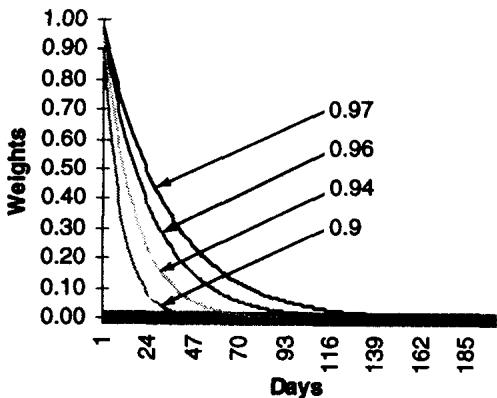
图 6.4：不同衰减因子下，权重随回溯天数的衰减形状。交易员应当按事件距今远近成比例地赋予近期事件重要性，但要足够灵活、不把度量当福音，因为他可能掌握"明天有预定骚乱"这种让所有过去信息变得学究化的信息，或因为发生了需要影响权重的结构性变化。交易员盘中最不该做的，就是搞得很科学、扮演计量经济学家。
用 表示衰减因子，它替代了上一套机制里"回溯多少天"的做法。与其拉长记忆，不如把权重推近 1：
当 很大（一般高于 1000 个观测）且 按定义小于 1 时成立。同样的衰减因子可同样用于相关性，以消除近期记忆的影响：
表 6.4 用 计算波动率：第 5 列是 的天数次幂，越往上（越久远）权重越小，最近一天用 、前一天用 ，依此类推。日加权波动率 = ，年化 ，比不加权的 10.73% 略低（因为近期波动稍低）。
理论映射：指数衰减就是 EWMA，是 RiskMetrics 与 IGARCH 的特例
Taleb 的指数衰减滤波，正是后来被 RiskMetrics 标准化的 EWMA（exponentially weighted moving average） 波动率估计：
等价的递归形式 一眼能看出它是把"昨日的方差估计"和"昨日的新息平方"按 混合。 越接近 1，记忆越长、波动率越平滑； 越小，对近期冲击反应越快。归一化常数 正是几何级数之和，保证权重加总为 1。
它与下一节要讲的 GARCH 是同一家族：EWMA 恰好是 IGARCH(1,1)（即 、 的退化 GARCH），把 、 代入 GARCH 递归即得。Taleb 称它"Kalman 滤波的简化版"也准确：Kalman 滤波是在状态空间模型里对隐藏状态（这里是真实波动率）做最优递归估计，EWMA 是其常增益（constant-gain）特例。但 Taleb 的关键提醒超越了数学：衰减因子是一个需要交易判断的旋钮，不是可以一劳永逸拟合出来的参数，因为结构断点（已知的未来事件、制度变化）会让任何纯数据驱动的权重失效。这正是他对 GARCH 批评的预演。
五、不存在恒定的波动率和相关性（There Is No Such Thing as Constant Volatility and Correlation）
图 6.5 到 6.9 让交易员警惕恒定波动率、尤其是恒定相关性的概念。
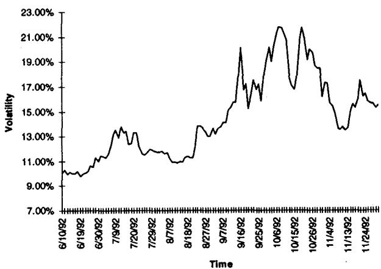
图 6.5：1992 年部分时段 USD-DEM 一个月期权的隐含波动率，明显起伏不定。
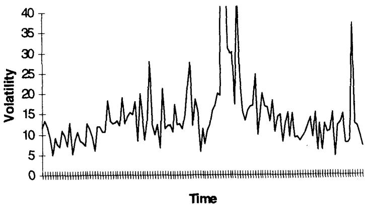
图 6.6：SP500 的两周实际波动率。1987 年 10 月股灾那周波动率飙到 120%，冲破了图的边界。度量波动率的波动率（vol of vol），会显示它比标的本身的波动率更加波动，尤其当它被切成不重叠的短时段时。
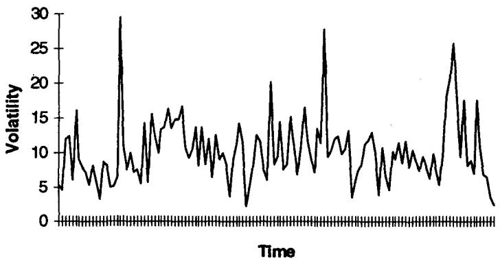
图 6.6 和 6.7 显示历史波动率比隐含波动率移动得更厉害。度量波动率的波动率时，交易员要小心避免使用重叠数据（overlapping data），并且时段长度有影响，建议选尽可能短的采样间隔。
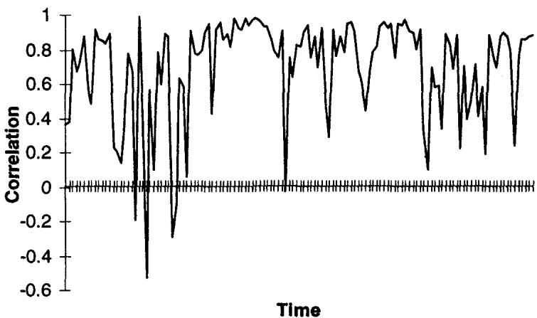
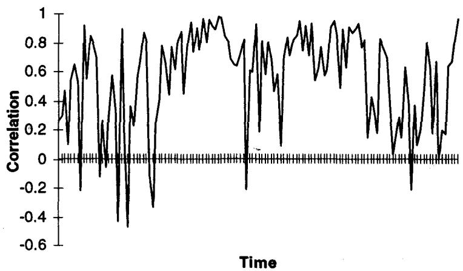
相关性比波动率和标的本身更加波动。图 6.8、6.9 显示不重叠两周时段里日移动的相关性。不必是统计学家也能看懂相关性一直在动。 第 15 章会从期权定价的视角深入讨论分布。
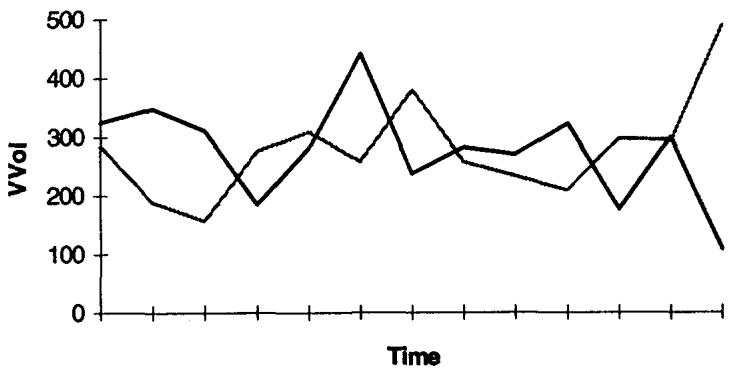
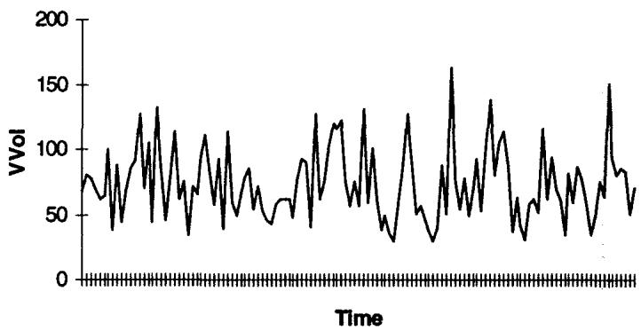
图 6.10 画历史波动率在不重叠时段的波动率，图 6.11 画隐含波动率的波动率。
Option Wizard：橡皮时间（Rubber Time）
经济时间与实际时间的概念偶尔出现在期权交易员的讨论中，这是个难题，但市场似乎妥善地调整了它。周末很少交易，市场被假设约开 247 天（除了假日繁多的欧洲国家）。交易员用 365 天的波动率给过程定价，但实际通过移除假日调回来。例如要在周五给一个周二到期的期权定价，他们用商业天数（2），并操纵那个用 5 天的公式、假装接下来 5 天的波动率低到能容纳实际移动。若假设市场每实际天波动率应是 15.7%，则 1 天 1%、2 天 1.41%、1 年 15.7%。周五的操作者会用那个能给出"4 天里预期移动 1.41%"的波动率，即 11.08%（）。
更高级的方法给每个实际天一个权重，并假设周日也能是波动率来源（讨厌的革命可能在这种闲暇时刻发生）。许多操作者把冬天的周六周日算作四分之一天、夏天更少。有些交易员真的"按钟"给期权定价，用一本预期市场移动的真实历书，调低东京午餐时间市场打盹时的强度。
交易员需要抓住的重要直觉是：波动率和时间的平方根对随机游走的离散度有相同的作用。
理论映射：vol of vol、重叠数据偏差，与"时间是可变速的"
这一节在数学上有三个值得点明的点。
其一，vol of vol 是随机波动率模型的核心参数。如果波动率本身是一个随机过程 ，那么 （vol of vol）控制着波动率分布的离散度，进而控制标的收益分布的峰度（kurtosis）和期权的 volga。Taleb 说"vol of vol 比标的波动率更波动"，对应的是真实市场里 很大、波动率聚类强烈，这是 Heston、SABR 等随机波动率模型试图捕捉的对象，也是第二章高阶期权"必须看四阶矩"的来源。
其二，避免重叠数据的警告是统计严谨性问题。用重叠窗口（如每天滚动算两周波动率）计算 vol of vol，会人为引入序列自相关，因为相邻观测共享大部分数据点，导致低估 vol of vol 的真实波动并扭曲显著性检验。Taleb 要求用不重叠时段，正是为了让各观测近似独立。
其三，橡皮时间是把日历时间替换成"业务时间/信息时间"。 这个标度里的 不必是物理时间，而应是市场"经历的信息量"。把周末、午休、假日按低权重折算，等价于做一个时间变换（time change） ，让随机游走在信息密集时走得快、信息稀疏时走得慢。这是 Clark（1973）的 subordinated process 思想：价格是布朗运动在一个随机的"交易时间"上的复合。Taleb 用 11.08% 那个数值演示的，就是把 4 个日历天折算成等效的信息时间后再反解出报价波动率。"波动率和 有相同作用"这句关键直觉的深层含义是：你可以把波动率的变化重新解释为时间流速的变化，二者在 里可以互换，这正是橡皮时间能成立的根据。
六、Parkinson 数与方差比方法（The Parkinson Number and the Variance Ratio Method）
Taleb 认为对期权交易员最重要的贡献中，有 Parkinson 数和方差比方法两项。
Parkinson 数：用高低价估波动率
物理学家 Michael Parkinson 在 1980 年提出的 Parkinson 数，旨在仅用某时段的最高价和最低价来估计（几何）随机游走的收益波动率。Taleb 教读者选择性地、且常常是反过来地用它：用已知的历史波动率去推导任一天最大值或最小值的分布。记为 ：
、 是某时间框架内登记的收盘对收盘的高点和低点。Taleb 给了几条使用上的告诫：所有交易员尊重收盘对收盘数字的完整性（因其官方性质），但对高低价保持谨慎，因为登记时有错印和操纵（有时操纵在某价位制造虚假成交，有时计算机错误污染数据）；在不流动的 OTC 外汇等现金产品里，新高新低可能逃过屏幕、只有参与交易的交易员知道；Parkinson 数适用于无收盘、无间断（偶数次交易）的 24 小时周期，否则最好用 Garman-Klass（1980）结合收盘对收盘和高低价的估计：
Parkinson 数的一个重要用途是评估日内价格分布、更好地理解市场动态。把 Parkinson 数和周期采样波动率比较，帮交易员理解市场的均值回复和止损的分布。两者的关系是
意思是通过 24 小时、一周或任何稳定采样观察到的市场波动率，应当（通过最大最小值的分布）与用极值度量的波动率相关。
这个度量不能用来比较收盘对收盘波动率与日内高低价。它能比较 24 小时高低价与每天同一时间采样的数据。对像多数股票那样只在日间交易的市场，最好用开盘对收盘波动率。
这个估计量在三种情形下给出有意义的信息：
- 障碍期权定价（及相关的美式数字、回望期权）。它们通过价格在屏幕上打印而触发，因此极值的分布最重要。障碍期权交易员只需要一个信息：高点或低点，看他的期权是否敲入敲出。这个极值如何分布，比收盘对收盘或任何其他波动率估计量都更重要，Parkinson 数是唯一的信息。若有偏差使 持续高于 ，交易员就知道触及触发价的概率更高。
- 一般期权 delta 调整。Parkinson 数与周期采样波动率的比较能揭示某市场均值回复的严重信息，让交易员据此设定调整频率。若 高于 ，交易员需要更频繁地对冲 long gamma；否则可以滞后所需调整，这种技术叫"让 gamma 跑（letting the gammas run）"。
- 一般交易策略。做市商的 edge 在 高于 时最强；否则更适合跟随趋势。这表现为价格的短期负自相关（见第四章）。
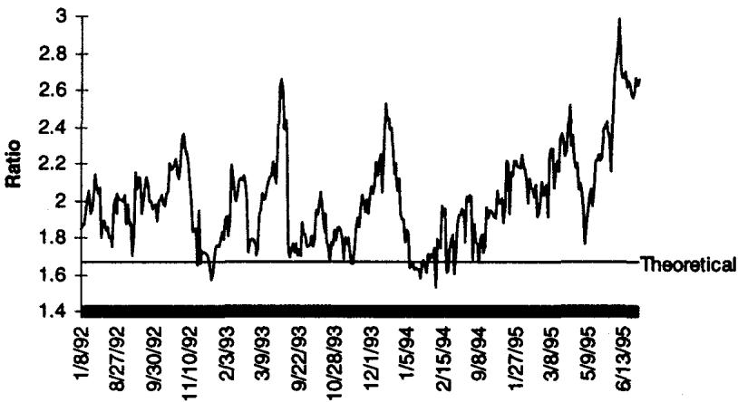
图 6.12：近三年美国国债期货的 Parkinson 数与同期波动率之比。结果极具说服力：明显偏向于比随机游走假设更宽的高低价区间。作者对近 20 个市场的额外测试显示这个偏差是持久的，读者可自行得出结论。
理论映射： 来自极差的分布，偏离它就是非随机游走的信号
Parkinson 数的核心是布朗运动极差（range）的分布。对一个无漂移、波动率 的布朗运动，一段时间内的对数极差 的平方期望是
那个 的因子正是为了把它无偏地还原成 。Parkinson 估计量比收盘对收盘估计量效率高得多（理论上方差约低 5 倍），因为极差用到了整条路径的信息，而非只用两个端点。比例 （约 ）是在标准随机游走假设下，极差波动率与周期采样波动率的理论比值。
Taleb 的天才在于反过来用它做诊断。如果实测 ，说明日内极差比纯随机游走该有的更宽，即价格在日内频繁地冲到高点和低点又回来,这是**均值回复（mean reversion）的标志，对应第四章和第三章的短期负自相关；如果 ，极差偏窄，价格倾向于单向走到底，这是趋势（trend）**的标志，对应正自相关。这把一个抽象的"市场有没有记忆"问题，变成了一个可计算的比值。三个应用全都从这里推出：均值回复强（ 大）则触及障碍概率高、long gamma 要勤对冲、做市商 edge 大；趋势强（ 小）则该跟趋势、let gammas run。图 6.12 显示国债期货持续 ，即持续均值回复，这正是做市商在该市场能持续提取 edge 的统计根据。
方差比方法：用采样频率检验记忆
另一项对交易员意义重大的工作是关于采样频率的。A. Lo 与 A. C. MacKinlay 关于方差比（variance ratio）的论文，试图通过一个简单的"方差相对采样频率"的检验，证明股价有记忆。
简言之，若按小时采样的波动率高于按日采样的波动率，市场可视为均值回复；反之若更宽频率间隔显示更高波动率，则可断定存在趋势。 后来发明了更强的检验，但这个简单的方差比对交易员足够简单易懂。例如市场每天动 1%，则 20 个商业日预期动 ；否则就有可疑的事发生，比如市场往一个方向动得比另一个方向更频繁。
交易员通常注意到按小时采样时波动率更高，尤其在 SP500 和 Eurodollar 这类市场，无论 1 天及更长周期之间的波动率之比如何。方差比连没听过这个方法的交易员都熟悉（见图 6.13）。股票交易员常纳闷：为什么 1995 年大盘动了近 35% 而历史波动率接近 10%，或为什么 1980 年代美元每年周期性地贬值 20% 而波动率不过十几个百分点。
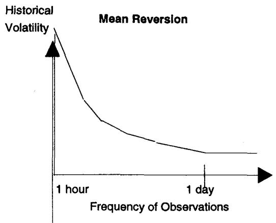
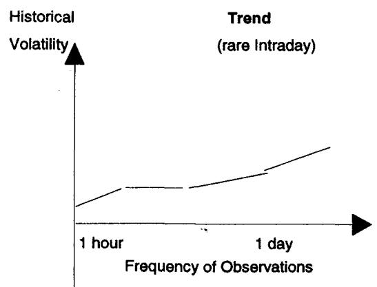
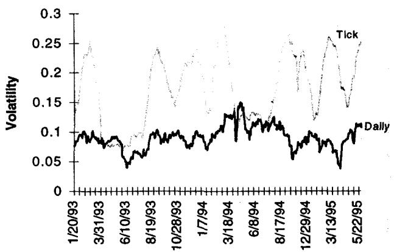
图 6.14 显示高频 tick 数据是关于交易成本函数和市场均值回复（由现金做市商的 edge 表达）的信息来源。波动率按 tick 增量度量，向读者展示采样对价格波动度量能有多极端的影响：它显示"瞬时"波动率（BSM 复制期权所要求的那个）是日度量波动率的两倍。
理论映射：方差比就是检验方差的时间可加性，比值偏离 1 即非随机游走
方差比方法的理论内核是：对一个独立增量过程（随机游走），方差随时间线性可加，即 。定义方差比
随机游走下 。（长周期方差超线性）意味着正自相关、趋势；（长周期方差亚线性）意味着负自相关、均值回复。它与 Parkinson 数是同一件事的两个测法：Parkinson 用极差测、方差比用不同采样频率测，都在检验同一个零假设——价格增量是否独立。
图 6.14 那个"瞬时波动率是日度量两倍"的观察尤其深刻，它把方差比直接接到 BSM 和交易成本上。BSM 复制要求的是瞬时波动率（ 的系数），而交易员能观测的是离散采样波动率。若高频（tick 级）波动率系统性地高于日度波动率，说明 、市场在最高频上强烈均值回复（bid-ask bounce + 真实回复），那么：(1) 用日度波动率定价期权会低估复制所需的瞬时波动率；(2) 但这个高频波动大半是 bounce，long gamma 者用限价单反而能把它转成 edge（第四章）；(3) 现金做市商的 edge 正是这个高频均值回复的提取。这把第三章的负自相关、第四章的 long gamma 限价单 edge、本章的 Parkinson/方差比缝合成一个完整的逻辑：市场在不同时间尺度上有不同的记忆结构，而这个结构决定了你该多频繁对冲、该做市还是跟趋势、以及该用哪个波动率定价。
Option Wizard：脑子里装着 GARCH
Taleb 用这段处理计量经济学的波动率模型，并解释为什么它们没能进交易室。期权交易员能轻松理解 ARCH 建模，正因为他们"脑子里装着 GARCH"（一位交易员在黄色三明治袋上被解释这个概念时如此说），而且比计量经济学家现有的更好。
1982 年 Engle 在英国通胀时间序列里发现异方差（即变动的波动率），开启了第一次建模尝试，结果是 ARCH（自回归条件异方差），它用自回归模型估计波动率过程，假设未来波动率与过去实现相关、每个实现有自己的权重。直觉上它是一个能用过去波动率数据递减地预测的过程（如滤波技术）。"波动率孕育波动率（volatility begets volatility）"，波动的一天更可能跟着波动的一天，平静的跟着平静的。Engle 之后模型如洪水般涌来：Bollerslev 和 Engle 推广出 GARCH（既自回归又移动平均）；最有趣的发展是 Nelson 的 E-GARCH（指数），它认为向下的波动率冲击（市场下跌时）才是决定未来波动率的重要部分，这是股票交易员和墨西哥比索投资者熟悉的事实。后来更复杂的 GARCH 建立在"重要的冲击是那些突破某阈值、依赖某制度条件的"认识上，于是有了 N-GARCH（非线性）、SWARCH（切换制度）等；H-GARCH（异质）用的时间尺度类似期权交易员的橡皮时间。
这些模型越来越接近一个老练期权交易员的看法：过去的价格行为信息以某种复杂方式影响未来波动率。但交易员脑中微妙的规则集，让他比这些数据处理技术更有力地形成自己的意见。这或许解释了为什么 ARCH 及其同类（连神经网络扩展）从未在交易室产生影响：它们目前还只是老练交易员头脑的拙劣模仿。隐含波动率（基本上就是交易员的意见）跑赢 GARCH 预测，除非在挤兑使隐含达到反常比例的时候。
GARCH(1,1) 可由如下过程刻画：
其中 ， 服从均值 0、单位方差的正态分布；（日观测一般约 0.01 量级），（但通常很接近 1）。GARCH 的非凡之处在于资产价格和它的波动率共享同一个"新息（innovation）"，区别是 对波动率而言被平方了。 代表"恒定波动率"系数， 提供 GARCH 新息（随机元素）的因子。 越高，资产分布的尾部越肥。某种意义上波动率遵循一个卡方过程，画出来有显著的右尾。简言之，波动率的分布呈正偏（三阶矩），资产的分布呈高峰度（四阶矩与二阶矩平方之比）。
Taleb 给出 GARCH 没能成功的两个根本理由。其一，隐含波动率包含过去价格里没有的信息（如预定的选举、经济数据发布），而这些对决定未来波动率很重要。两位贸易部长突然宣布会面，不会影响货币对，但交易员知道结果会导致跳变（上或下，视协议性质）；这种信息不在过去价格里。事实上会面前波动率会冻结，市场对货币的任何信息麻木，于是 GARCH 会预测波动率下降（方向完全错）。其二，过去价格里有的某些信息（如选举导致的跳变）因其非重复性而对未来波动率没有意义，交易员知道如何在波动率预测里过滤掉它们，计量经济学家不知道。作为一个群体，交易员受益于近三十年的口头传统和战争故事。结论是：在计算机与交易员的较量中，交易员目前仍明显占上风。
理论映射：GARCH 是离散随机波动率、 控制峰度，但它是后视的
GARCH 在理论上是一个离散时间的随机波动率模型，与连续时间的 Heston 模型互为镜像。递归式 让条件方差均值回复到长期水平 ，回复速度由 决定（越接近 1 越慢、波动越持久）。Taleb 指出的" 越高尾部越肥"有精确含义： 是新息平方进入方差的权重，它制造波动率聚类，而波动率聚类是无条件分布出现超额峰度（leptokurtosis）的来源。资产收益的无条件峰度
只要 就严格大于正态的 3。这把本章的厚尾、第二章高阶期权的四阶矩、第三章 Sharpe 失效串了起来：波动率聚类是厚尾的生成机制。
但 Taleb 对 GARCH 的批评在理论上同样站得住，而且深刻。GARCH 是严格后视的（backward-looking）：它的状态变量只是过去收益平方的函数，信息集 只含历史价格。隐含波动率的信息集 则是前视的，包含了尚未反映在价格里的预定事件（选举、数据、会议）。两个信息集的差 恰恰是决定未来波动率的关键部分。会议前波动率冻结那个例子是决定性反例：真实的条件波动率因事件临近而上升（一个 forward-looking 的跳变风险），但 GARCH 看到价格冻结、预测波动率下降，符号都错了。这就是为什么隐含波动率（市场对未来信息的定价）系统性跑赢 GARCH，例外只在挤兑时（隐含被流动性扭曲，第三、四章）。交易员"脑子里的 GARCH"之所以更强，是因为它的信息集是前视且能过滤非重复事件的，这是任何纯历史数据模型原理上做不到的。
七、本章综述：理论与实务的对照
第六章把波动率和相关性这两个期权定价的核心输入，从"已知的公式"还原成"需要判断的、会背叛你的估计量"。它的一条暗线是：这些量没有一个是恒定的，而它们的不稳定性恰恰是期权风险（gamma、vega、vol of vol、相关性风险）的来源；交易员的优势在于他用前视、可过滤的信息集去估计它们，而模型只能后视。 下表把 Taleb 的实务命题与对应的理论命题对齐。
| Taleb 的实务命题 | 对应的理论命题 |
|---|---|
| 100% 相关 ≠ 等幅移动 | ，相关性是归一化协方差 |
| 波动率与 对离散度作用相同 | 标度；可互换为时间变换 |
| 几何 vs 算术是经验问题（Bachelier） | 扩散项设定 vs ；低价区模型风险 |
| Eurodollar/Euroyen 低利率事故 | 几何模型低估算术市场的绝对波动，short wing 爆亏 |
| 去均值的不居中波动率 | 估原点二阶矩 ，与 gamma 损益 同构 |
| 滤波 / 指数衰减 | EWMA = IGARCH(1,1)；Kalman 常增益特例 |
| 衰减因子需交易判断、非纯拟合 | 结构断点使数据驱动权重失效 |
| 相关性比波动率更不稳定 | 相关性矩阵在压力下崩坏（接第四、五章 VaR 批评） |
| vol of vol 比标的更波动 | 随机波动率 控制峰度与 volga |
| 避免重叠数据 | 重叠窗口引入伪自相关，扭曲显著性 |
| 橡皮时间 | 时间变换 ；Clark subordinated process |
| Parkinson 数 | 布朗运动极差分布 |
| ⇒ 均值回复、勤对冲、做市 edge | 极差偏宽 = 负自相关； = 趋势 |
| 方差比、小时 vol 高于日 vol | ，偏离 1 即非随机游走 |
| 瞬时波动率是日度量的两倍 | BSM 用瞬时 vol；高频均值回复 = 做市 edge 来源 |
| 隐含波动率跑赢 GARCH | GARCH 后视、；隐含前视、含预定事件 |
| GARCH 的 越高尾越肥 | 波动率聚类生成超额峰度，厚尾的生成机制 |
核心观点
第一，相关性的本质是归一化的协方差，而非"等幅同向移动"。把 和回归斜率 混淆会在多资产对冲里直接对错量，两者差一个波动率比。
第二，几何还是算术布朗运动是经验问题，不是教条。在中等价位两种坐标系结果相近，在近零价位（低利率、负利率）剧烈分歧。Eurodollar 和 Euroyen 事故证明，用错坐标系会让 short wing 在被低估的绝对波动上爆亏。模型是坐标系，不是真理。
第三，对动态对冲者，该估的是不居中的原点二阶矩 ，因为进入 gamma 损益的是每日移动的平方本身，与漂移无关。单边上涨的月份居中方差为零，long gamma 者却天天 scalp 到钱。
第四，波动率不恒定，相关性更不恒定，vol of vol 比标的还波动。市场已适应波动率会变（用随机波动率定价），还没适应相关性会变，这是多资产期权和 VaR 在压力下崩坏的根源，呼应第四、五章。
第五，Parkinson 数和方差比把"市场有没有记忆"变成可计算的诊断。 偏离 1.67、或 偏离 1，分别从极差和采样频率两个角度检验增量独立性。这直接指导障碍期权定价、delta 对冲频率、做市还是跟趋势。
第六，交易员的隐含波动率长期跑赢 GARCH，因为信息集不同。GARCH 严格后视、只看历史价格；隐含波动率前视、包含预定事件并能过滤非重复冲击。会议前波动率冻结时 GARCH 连符号都预测错。计算机目前仍输给交易员的口头传统。
估计波动率/相关性时的操作清单
读完本章，估计或使用这两个量时，可依次自问：
- 我说的是 actual 还是 implied？是把它当历史描述，还是当对未来的定价？
- 这个市场更像几何还是算术？在当前价位附近两种假设分歧大吗？我有没有 short 一个被低估绝对波动的 wing？
- 我该用居中还是不居中估计量？我交易的是方差还是每日移动的平方（gamma）？
- 我的回溯窗口/衰减因子合理吗？有没有已知的未来事件或结构断点让历史权重失效？
- 相关性我用了多久的数据？它在压力场景下还稳定吗？我是不是把一个会崩坏的 当成了常数？
- 算 vol of vol 时我用的是不重叠数据吗？采样间隔够短吗？
- 和方差比告诉我这个市场是均值回复还是趋势？据此我该多频繁对冲、该挂限价单还是止损单、该做市还是跟趋势？
- 我的波动率模型是后视的吗？有没有把预定事件（选举、数据、会议）这些只在隐含里、不在历史价格里的信息纳入？
一句话收束
本章最该记住的一句：波动率和相关性都不是常数，市场已经学会了给波动的波动率定价、却还没学会给波动的相关性定价；而你估计它们时真正的优势，不在更精巧的公式，而在你能用前视、可过滤的信息集，去做任何只看历史价格的模型原理上做不到的判断。